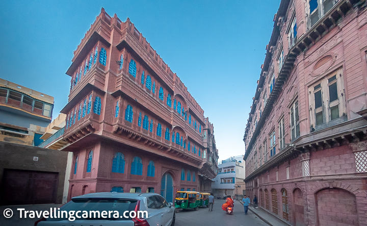

Bikaner Fort: The Majestic Red Sandstone Marvel
Bikaner Fort, also known as Junagarh Fort, is a stunning example of Rajasthani architecture and history.
Fun Fact:
~It was never conquered and stands as a testament to the city’s rich heritage!
Things to Explore at Bikaner Fort:
-
The Karan Mahal:
Marvel at the intricate carvings and beautiful frescoes in this royal palace.
-
The Anup Mahal:
Explore the grand halls adorned with mirrors and paintings.
-
The Ganga Golden Jubilee Museum:
Discover artifacts and exhibits showcasing the history of Bikaner.
-
The Fort Walls:
Walk along the massive walls offering panoramic views of the city.
-
The Temples:
Visit the ancient temples within the fort complex, reflecting spiritual significance.
Why Visit Bikaner Fort?
!Because it’s a journey through time, showcasing the grandeur and resilience of Rajasthan’s royal past!
Bikaner Camel Festival: A Celebration of the Desert's Pride
The Bikaner Camel Festival is a vibrant celebration of the city’s rich cultural heritage and its deep connection with camels.
Fun Fact:
~It’s one of the largest camel festivals in India, attracting visitors from around the world!
Things to Explore at Bikaner Camel Festival:
-
The Camel Procession:
Witness a grand parade of beautifully decorated camels, showcasing their elegance and strength
-
The Camel Races:
Experience the thrill of camel racing, a highlight of the festival that showcases the agility and speed of these desert animals.
-
The Folk Performances:
Enjoy traditional music and dance performances that bring Rajasthan’s vibrant culture to life.
-
The Camel Beauty Pageant:
Marvel at camels adorned with colorful accessories, competing for the title of the most beautiful camel.
-
Local Cuisine & Handicrafts:
Taste authentic Rajasthani dishes and shop for unique handicrafts at the festival stalls.
Why Visit the Bikaner Camel Festival?
!Because it’s a one-of-a-kind experience that celebrates the spirit of Rajasthan and its beloved camels!
Lalgarh Palace: A Royal Retreat in the Desert
Lalgarh Palace is a magnificent architectural marvel that reflects the grandeur of Rajasthan’s royal heritage.
Fun Fact:
~It was built in memory of Maharaja Ganga Singh and showcases Indo-Saracenic architecture!
Things to Explore at Lalgarh Palace:
-
The Museum:
Explore the museum housing artifacts, photographs, and memorabilia from the royal family.
-
The Gardens:
Stroll through the lush gardens adorned with fountains and sculptures.
-
The Architecture:
Admire the intricate carvings, arches, and domes that define the palace’s stunning architecture.
-
The Courtyards:
Relax in the serene courtyards that offer a glimpse into royal life.
-
The Heritage Hotel:
Experience luxury by staying at the heritage hotel within the palace premises.
Why Visit Lalgarh Palace?
!Because it’s a journey into Rajasthan’s royal past, offering a glimpse of opulence and history!

Karni Mata Temple: The Sacred Abode of the Rats
Karni Mata Temple, also known as the Rat Temple, is a unique and revered pilgrimage site in Bikaner.
Fun Fact:
~It’s dedicated to Karni Mata, an incarnation of Goddess Durga, and is famous for its resident rats!
Things to Explore at Karni Mata Temple:
-
The Main Shrine:
Visit the main shrine where devotees pay homage to Karni Mata and her divine presence.
-
The Rats:
Observe the thousands of sacred rats that are considered holy and are treated with reverence.
-
The Architecture:
Admire the intricate marble carvings and silver doors that adorn the temple.
-
The Surrounding Area:
Explore the peaceful surroundings and soak in the spiritual ambiance.
-
The Festivals:
If you visit during festivals, experience the vibrant celebrations and rituals performed by devotees.
Why Visit Karni Mata Temple?
!Because it’s a spiritual journey unlike any other, where devotion meets the extraordinary!
Ganga Golden Jubilee Museum: A Treasure Trove of History
Ganga Golden Jubilee Museum is a cultural gem that showcases the rich history and heritage of Bikaner.
Fun Fact:
~It was established to commemorate the golden jubilee of Maharaja Ganga Singh’s reign!
Things to Explore at Ganga Golden Jubilee Museum:
-
The Artifacts:
Discover a vast collection of artifacts, including sculptures, paintings, and manuscripts.
-
The Galleries:
Explore various galleries dedicated to archaeology, art, and ethnography.
-
The Architecture:
Admire the museum’s beautiful architecture that reflects Rajasthani design elements.
-
The Library:
Visit the library housing rare books and documents related to Bikaner’s history.
-
The Cultural Programs:
If you’re lucky, catch cultural programs and exhibitions showcasing local art and traditions.
Why Visit Ganga Golden Jubilee Museum?
!Because it’s a journey through time, offering insights into Bikaner’s glorious past and cultural richness!

Laxmi Nath Temple: A Spiritual Haven
Laxmi Nath Temple is a revered Hindu temple dedicated to Lord Vishnu and Goddess Lakshmi, located in the heart of Bikaner.
Fun Fact:
~It’s known for its stunning architecture and intricate carvings that depict various deities!
Things to Explore at Laxmi Nath Temple:
-
The Main Deity:
Pay your respects to the main deity, Laxmi Nath, and seek blessings for prosperity and well-being.
-
The Architecture:
Marvel at the temple’s exquisite architecture, featuring intricate carvings and beautiful frescoes.
-
The Festivals:
If you visit during festivals, experience the vibrant celebrations and rituals performed by devotees.
-
The Surrounding Area:
Explore the peaceful surroundings and soak in the spiritual ambiance of the temple complex.
-
The Local Culture:
Engage with local devotees and learn about their traditions and beliefs.
Why Visit Laxmi Nath Temple?
!Because it’s a spiritual journey that offers tranquility, devotion, and a glimpse into Rajasthan’s rich religious heritage!
Shiv Bari Temple: A Serene Abode of Lord Shiva
Shiv Bari Temple is a tranquil temple dedicated to Lord Shiva, nestled amidst lush gardens and serene surroundings.
Fun Fact:
~It’s known for its beautiful architecture and peaceful ambiance, making it a perfect spot for meditation!
Things to Explore at Shiv Bari Temple:
-
The Main Shrine:
Visit the main shrine where devotees offer prayers and seek blessings from Lord Shiva.
-
The Gardens:
Stroll through the lush gardens adorned with fountains and sculptures, providing a serene escape from the city’s hustle.
-
The Architecture:
Admire the intricate carvings and beautiful frescoes that adorn the temple’s walls.
-
The Festivals:
If you visit during festivals, experience the vibrant celebrations and rituals performed by devotees.
-
The Peaceful Atmosphere:
Enjoy the tranquil ambiance, perfect for meditation and reflection.
Why Visit Shiv Bari Temple?
!Because it’s a spiritual retreat that offers peace, devotion, and a glimpse into Rajasthan’s rich religious heritage!

Rampuria Havelis: Architectural Marvels of Bikaner
Rampuria Havelis are a group of stunning havelis (mansions) that showcase the grandeur of Bikaner’s architectural heritage.
Fun Fact:
~These havelis were built by wealthy merchants and are known for their intricate carvings and beautiful frescoes!
Things to Explore at Rampuria Havelis:
-
The Architecture:
Marvel at the exquisite architecture, featuring intricate carvings, jharokhas (balconies), and ornate facades.
-
The Frescoes:
Admire the beautiful frescoes that adorn the walls, depicting scenes from mythology and daily life.
-
The Courtyards:
Explore the spacious courtyards that provide a glimpse into the lifestyle of the erstwhile royal families.
-
The Heritage Walk:
Take a guided heritage walk to learn about the history and significance of these magnificent havelis.
-
The Local Culture:
Engage with local artisans and learn about their craftsmanship and traditions.
Why Visit Rampuria Havelis?
!Because it’s a journey through time, showcasing the opulence and architectural brilliance of Bikaner’s past!
Gajner Palace: A Regal Retreat by the Lake
Gajner Palace is a stunning heritage hotel located on the banks of Gajner Lake, offering a glimpse into Rajasthan’s royal past.
Fun Fact:
~It was once a hunting lodge for the Maharajas and is now a luxurious heritage hotel!
Things to Explore at Gajner Palace:
-
The Architecture:
Admire the exquisite architecture that blends Rajput and Mughal styles, featuring intricate carvings and beautiful domes.
-
The Lake:
Enjoy serene views of Gajner Lake, perfect for boating and birdwatching.
-
The Heritage Walk:
Take a guided heritage walk to learn about the history and significance of the palace.
-
The Gardens:
Stroll through the lush gardens adorned with fountains and sculptures.
-
The Luxury Stay:
Experience royal hospitality by staying at this luxurious heritage hotel.
Why Visit Gajner Palace?
!Because it’s a regal retreat that offers luxury, history, and breathtaking views of Rajasthan’s natural beauty!